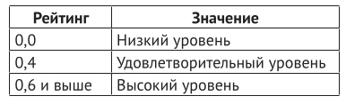

21. Оценка работы. (в коде есть строки из следующих тем: "словари").
Условие:
Представьте, что в компании проводится аттестация сотрудников в конце каждого года.
Шкала рейтинга начинается на отметке 0,0, и чем лучше оценка, тем выше руководство оценивает сотрудника, а значит, тем больше будет его прибавка к зарплате.
Рейтинг, присваиваемый сотрудникам, может составлять значения 0,0, 0,4 или 0,6 и выше.
Значения между 0,0 и 0,4, а также между 0,4 и 0,6 никогда не используются. Значения, ассоциированные с каждым рейтингом, показаны ниже:

Прибавка к зарплате сотрудника рассчитывается как рейтинг, умноженный на $2400,00.
Напишите программу, которая будет запрашивать у пользователя рейтинг сотрудника и выводить соответствующее значение из приведенной таблицы. Также необходимо показать сумму прибавки сотрудника. При вводе некорректного значения рейтинга программа должна об этом сообщать.
Код:
table = {
0.0: "Низкий уровень",
0.4: "Удовлетворительный уровень",
0.6: "Высокий уровень",
}
estimation = float(input("%100s" % "Введите оценку с точностью, кроме максимальной (0.0, 0.4 или 0.6 и выше): "))
increase = 2400
if estimation not in table and estimation < 0.6:
print("%99s" % "Вы ввели неверные данные")
elif estimation >= 0.6:
print("%99s" % "Высокий уровень рейтинга. Прибавка составит:", (increase * 0.6), "долларов США.")
elif estimation in table:
print("%98s" % str(table[estimation]) + ". Прибавка составит:", (increase * estimation), "долларов США.")